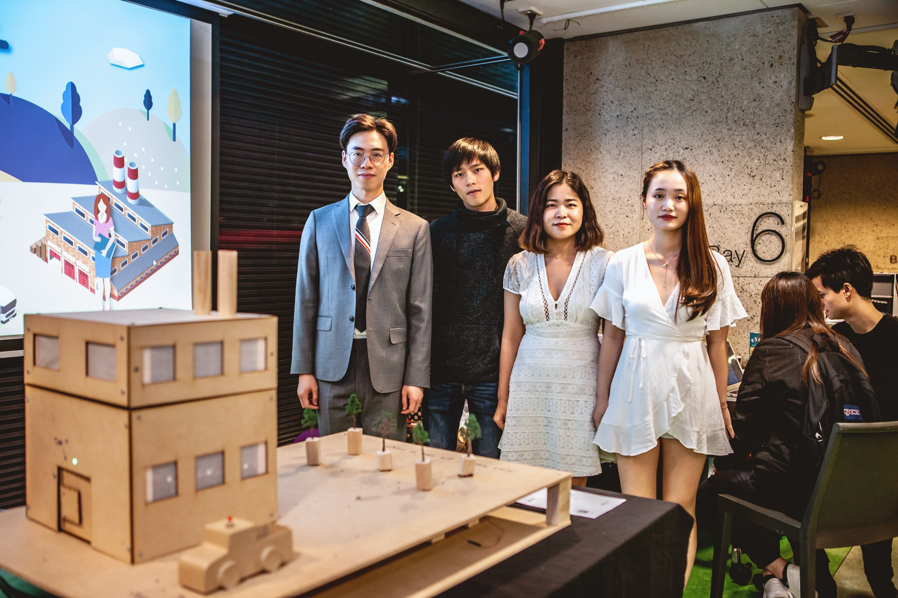

Throughout this course, several documentations have been proposed by individual and by Team Mars as a group.
Individual Contributions
Although I almost participated in most of developing tasks, my key role in the team is a design lead so I taken the main responsibility on UI/UX, graphic & conceptual design.
Weekly Reflection Journal - The blog post that documents and reflectson the work I completed for the course.
Initial Concept Pitch Sketch - The concept sketch that produce and illustrate my initial idea.
Initial Concept Pitch Poster - The concept poster that captures my initial idea and links to related works.
Project Kickstarter Video - The video that explains a method of the application, human values and the experience we are seeking to create with the project.
Group Works

Developing this project is an enjoyable and unforgettable experience because it is so blessed for me to work with my team members. The workload was allocated fairly and equally to every team members, In this team, Mars, we have Hao Lin (Hardware Programmer), Jiaqian Xie (Software Programmer), Na Dong (Researcher) and I (Designer). Despite of role allocations, we were participate in the iteration，assistance and collaboration with each other actively and frequently. When I was facing challenges, they would help and support me together. I want to thanks them all because I cannot finish this project without their help. Therefore, I learned how to cooperate with my peers and raise my team spirit.
Proposal Presentation Slides - The slides that present our initial concept and the intended experience through a sketch/mock-up.
Proposal Report - The report that contains a collation of proposal presentation materials.
Prototype Demonstration Slides - The prototype that demonstrates the intended interactions and user experience for our concept.
Prototype Appraisal Report - The report that provides a critique for each of the other team’s prototypedemonstrations.
Project Website - The webpage that collates an overall programme for the exhibit.